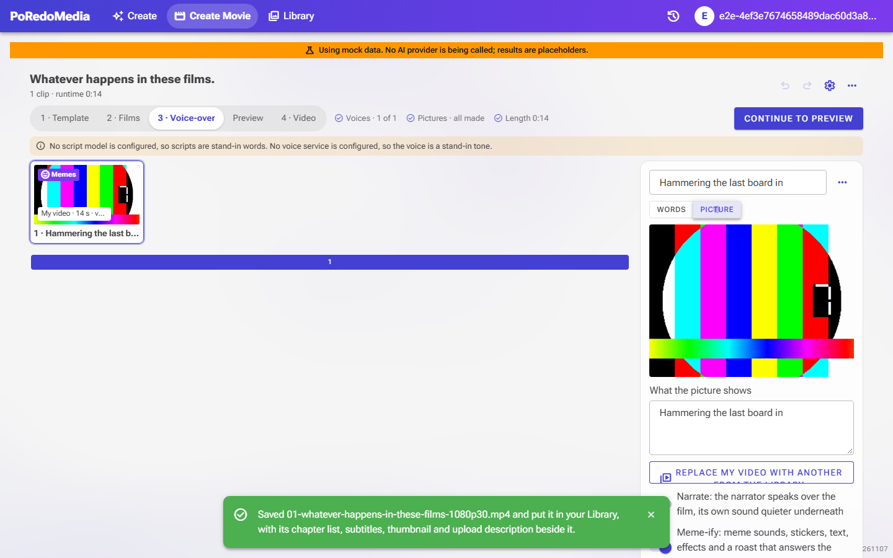

BEFORE
Every clip meme-ified, roast over the top
- No way to leave one clip out of Meme-ify.
- The roast saw the narration as plain speech, and could start mid-sentence, over the narrator.
- A movie's render was free of the daily run allowance.
AFTER
A Meme-ify switch on each clip
- Meme-ify switch on the clip's Picture tab, on by default; off, the clip plays as it is and its badge goes.
- The roast is told the speech is a narrator and answers it like a heckler; its lines wait for the narrator's pauses.
- Rendering a movie uses one run of the day's allowance, and says so first; given back if no video comes of it.

How a joke takes its turn
narrator |=== line 1 ===| |=== line 2 ===|
0s 4s 6s 9s
before joke due at 2s ──► spoken at 2s, over line 1
after joke due at 2s ──► waits for the end of line 1, spoken at 4.2s
(a joke that still runs into line 2 has the narrator turned down under it)